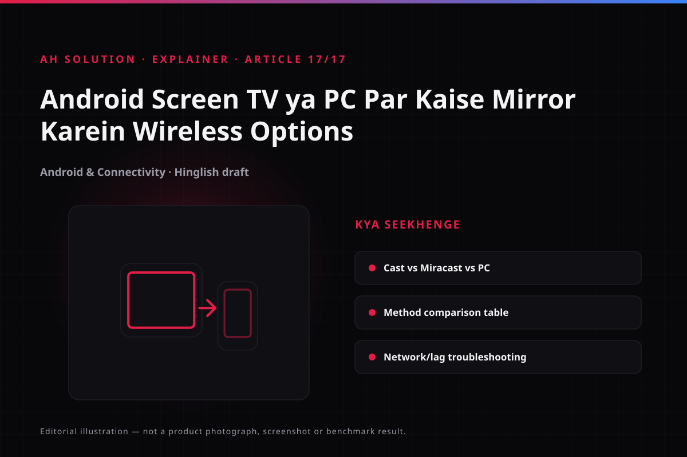

Have you ever wanted to show your phone screen on a larger TV, or mirror it to your PC without installing an extra application? The video "How to Mirror Your Android Screen to TV or PC Without an App! 📱➡️📺" covers exactly that topic. The clip is short at 1:24, but the question behind it is a common one — with one caveat: "without an app" is not universal. It depends on your phone, your TV or receiver, and your Windows version. This guide compares the real wireless options, explains compatibility, and gives practical advice.
Original video: How to Mirror Your Android Screen to TV or PC Without an App! 📱➡️📺 Video published: 08 July 2020 · Duration: 01:24
Screen mirroring versus casting: know the difference
Start by separating the two terms:
- Screen mirroring (Miracast-style wireless display): the entire phone screen appears on the TV or PC at the same time, and every action is mirrored.
- Casting (Google Cast): app-specific casting — only the video or media stream is sent, and the rest of the phone interface is not shown. Playback can sometimes be controlled from the phone.
This guide focuses mainly on screen mirroring, the theme of the video.
The real wireless options
There are several built-in ways to share an Android screen today:

| Method | What you need | Best for | Common issues |
|---|---|---|---|
| Google Cast (Chromecast built-in) | A Chromecast built-in TV or a dongle on the same Wi-Fi | Casting from apps, plus some mirroring depending on the device | Not every phone shows a "mirror" option; DRM can block mirroring |
| Miracast (Wireless Display) | A TV with Miracast support, or a Windows PC with Wireless Display | Full screen mirroring (no extra casting app in many cases) | Many modern smart TVs dropped Miracast in favour of Cast; the PC needs the Wireless Display feature |
| Manufacturer-specific (Smart View, Screen Cast and similar) | Samsung or other OEM TVs plus a compatible phone | Seamless use within the same brand ecosystem | Works best in the same ecosystem, less reliable across brands |
| Windows Wireless Display (the Connect app) | A Windows 10/11 PC with the Wireless Display optional feature enabled | Mirroring an Android screen to a PC | The feature has to be enabled; older Windows editions may lack it |
Note: the "without an app" claim can be misleading. Miracast and Wireless Display operate at system level, but the receiver still needs setting up.
Check compatibility first
Before mirroring, work through these checks:
- TV check: check the manual — does it support Cast built-in, Miracast, AirPlay (less common for Android) or similar?
- Phone check: in Settings, look for "Cast", "Screen Cast", Smart View, "Wireless Display" or "Connected devices".
- PC check: search for the "Connect" app in Windows, or look for Wireless Display under Settings > System > Optional features.
- Network: the same Wi-Fi network resolves most cases, though the requirement varies.
A step-by-step approach
A) Mirror from Android to a TV
- Turn on the TV and have the input or receiver mode ready (a separate Miracast mode, if it has one).
- On the phone, open Settings > Connected devices > Cast (or the OEM equivalent).
- Enable "Enable wireless display" or "Screen cast" from the menu (the wording varies).
- Select the TV in the list of available devices.
- Accept the prompt on the TV if one appears.
- The screen should now be mirrored.
Button names depend on the OEM, so verify them on your own device.
B) Mirror from Android to a Windows PC
- On the PC, check whether the "Wireless Display" feature is enabled: Settings > System > Optional features > Add feature > Wireless Display.
- Open the "Connect" app on the PC (search for "Connect" in Windows) and let it wait for incoming connections.
- From the phone, open the same cast or wireless display menu and select the PC.
- Accept the prompt and the mirroring starts.
A wired fallback for when wireless fails
If the wireless connection will not establish itself, wired options are worth considering:
- USB-C to HDMI adapter: available if the phone supports USB-C video output.
- DisplayLink or other adapters: dependent on the capabilities of the device.
- SlimPort and similar: less common these days.
A wired connection is usually more stable, which matters for gaming or long sessions.
Performance, latency and quality
Wireless mirroring involves a few trade-offs:
- Latency: acceptable for ordinary content, but noticeable lag can appear in fast games.
- Resolution: depends on the resolution of the TV or PC screen and the capability of the phone.
- Audio: usually comes from the TV or receiver; on a PC it varies.
- DRM content: protected content from Netflix and Prime can show a black screen when mirrored.
- 5GHz versus 2.4GHz: 5GHz often performs better, but its range is shorter.
Common troubleshooting
| Problem | Solution |
|---|---|
| Device not found | Check it is the same Wi-Fi, toggle airplane mode, restart the phone, TV or PC |
| Black screen | Avoid mirroring DRM content; use the app's own cast option if there is one |
| Laggy | Try a 5GHz network, keep the router close, reduce bandwidth use by others |
| Disconnects | Check for Wi-Fi interference and keep the devices close together |
| No "Wireless Display" on the PC | Add the optional feature (Pro editions usually have it; some are limited) |
| Audio missing | Check the TV or PC volume and confirm the correct input is selected |
Troubleshooting and limitations
Keep your expectations realistic:
- Not universal: not every phone mirrors to every TV, because the standards differ.
- Miracast decline: many newer TVs no longer support Miracast and prefer built-in Cast.
- PC edition limits: Windows Home does not always support the full Wireless Display host role.
- Network dependency: congested networks fail often.
- Battery drain: mirroring drains the phone battery quickly.
Safety and privacy
Your entire phone screen is visible while you mirror, so hide private notifications, OTPs and other sensitive information before you start. Be extra careful on a public display, and disconnect when the session ends.
Frequently asked questions
Does every Android TV mirror without an app?
No. It depends on the Cast and Miracast support of the phone, the support of the TV, and the software version.
Is being on the same Wi-Fi necessary?
For the majority of built-in methods, yes. Some advanced setups work differently, but the same network is the safe general rule.
What is the difference between Miracast and Google Cast?
Miracast mirrors the full screen (peer-to-peer style in parts), while Google Cast is mostly app casting, and full mirroring is limited on Cast as well.
Can mirroring be used for gaming?
Casual games will run, but competitive fast games will show noticeable lag — a wired connection is better.
Is an app needed to mirror to a PC?
If you use Wireless Display plus the Connect app in Windows, it is generally built in, so no third-party application is necessary. The feature does have to be enabled first.
Do DRM videos mirror?
Mostly not — DRM protection produces a black screen. Try the app's native cast option instead.
Final recommendations
Start with a compatibility check on both the phone and the receiver. If your TV has Chromecast built-in, try app casting. If you want a full screen mirror without an app, look at Miracast or Wireless Display. Mirroring to a PC works too, provided the Wireless Display feature is enabled. For performance, consider a wired connection, and always mind privacy on a public screen. Our other connectivity guides on tutorials.html are worth exploring.
Resources and official links
- Google Support — Cast your Android screen from the Google Home app — the official method for casting and mirroring.
- Microsoft Support — Screen mirroring and projecting to your PC — wireless display and Miracast on Windows.
- Microsoft Support — Fix connections to wireless displays or docks in Windows — troubleshooting when the connection fails.
- Wi-Fi Alliance — Miracast — the official description of the Miracast standard.
- Samsung India — Screen mirroring and Multi View — sharing a phone screen on Samsung TVs.